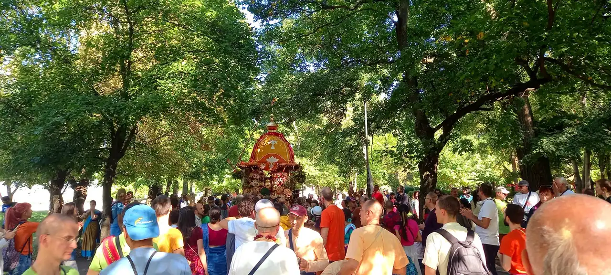

Ратха ятра в София, 2021
Общество за Кришна съзнание в България
Регистрирано вероизповедание в България от 1991 г.
Програма и събития
23.08.2026
Ратха ятра, 31-вият фестивал
Парк „Борисова градина“, Лятната сцена, от 11:00 до 21:30. Шествие с колесницата от 15:00 до 18:30.
Всеки ден, 8:00
Клас по Шримад Бхагаватам
В храма в София.
Събота, 15:30 до 19:30
Празнична програма
В храма в София.
Всеки ден
Храмът е отворен
7:30 до 9:00 и 18:00 до 18:30; в събота 7:30 до 9:00 и 15:30 до 20:00.
Джанмащами
Празникът на появата на Кришна, един от най-големите в годината.
Гаура Пурнима
Появата на Шри Чайтаня Махапрабху.
Ратха ятра
Празникът с колесница: шествие из града, открито за всички.
Книгите на Шрила Прабхупада на български
Заглавия и описания
Бхагавад-гита каквато е
А. Ч. Бхактиведанта Свами Прабхупада
Най-известният и почитан духовен текст на Индия: разговорът между Кришна и Арджуна, с пълен санскритски текст, превод и подробен коментар на Шрила Прабхупада. Основополагащо четиво за всеки, който се интересува от ведическата мъдрост.
Шримад Бхагаватам
А. Ч. Бхактиведанта Свами Прабхупада
„Зрелият плод на ведическото дърво на знанието.“ Многотомно издание с превод и коментар, разкриващо науката за Бога и пътя на чистата преданост.
Шри Чайтаня-чаритамрита
А. Ч. Бхактиведанта Свами Прабхупада
Житието и ученията на Шри Чайтаня Махапрабху, най-пълният богословски труд на традицията Гаудия ваишнавизъм.
Кришна: Върховната Божествена Личност
А. Ч. Бхактиведанта Свами Прабхупада
Разказите за деянията на Кришна, предадени достъпно и увлекателно: обобщение на Десета песен на Шримад Бхагаватам.
Нектарът на предаността
А. Ч. Бхактиведанта Свами Прабхупада
Наука за същината на бхакти, как да развием чиста любяща преданост към Бога. Изложение на класическия труд на Рупа Госвами.
Нектарът на наставленията
А. Ч. Бхактиведанта Свами Прабхупада
Кратко, но дълбоко ръководство за духовния живот в единайсет стиха с коментар, практическа основа на предаността.
Шри Ишопанишад
А. Ч. Бхактиведанта Свами Прабхупада
Една от най-важните Упанишади: знанието, което ни доближава до Върховния Бог, с превод и коментар.
Науката за себепознанието
А. Ч. Бхактиведанта Свами Прабхупада
Сборник от есета и разговори, които представят основите на Кришна съзнание за съвременния читател, отлично въведение.
Пътуване към себеоткриването
А. Ч. Бхактиведанта Свами Прабхупада
Достъпни беседи за душата, съзнанието и духовния път, за всеки, който прави първите си стъпки.
Лесно пътуване до други планети
А. Ч. Бхактиведанта Свами Прабхупада
За духовната природа на съзнанието и възможността то да се издигне отвъд материалния свят.
Отвъд раждането и смъртта
А. Ч. Бхактиведанта Свами Прабхупада
Какво се случва след смъртта? Ясно изложение за душата, прераждането и пътя към освобождение.
Съвършени въпроси, съвършени отговори
А. Ч. Бхактиведанта Свами Прабхупада
Разговор между Шрила Прабхупада и млад търсещ: живо въведение в духовните въпроси на живота.
Учението на Бог Чайтаня
А. Ч. Бхактиведанта Свами Прабхупада
Същината на ученията на Шри Чайтаня Махапрабху: основата на пътя на санкиртана.
По-висшият вкус
Бхактиведанта бук тръст
За вегетарианството и духовната кухня, с рецепти за прасадам, храна, предложена на Бога.
Раджа-видя: Царят на знанието
А. Ч. Бхактиведанта Свами Прабхупада
За най-висшето и същевременно най-радостно знание: пътя на предаността, „царят на знанието“.
Възпявай и бъди щастлив
Бхактиведанта бук тръст
За силата на маха-мантрата Харе Кришна и практиката на медитация чрез възпяване на светите имена.
Как да поръчате: пишете ни на info@krishnabg.com или се обадете на 02 961 60 50.
Контакти
София
| Адрес | гр. София, кв. „Малинова долина“, бул. „Климент Охридски“ 119 |
|---|---|
| Телефон | 02 961 60 50 |
| Имейл | info@krishnabg.com |
| Часове | Понеделник до петък и неделя: 7:30 до 9:00 и 18:00 до 18:30. Събота: 7:30 до 9:00 и 15:30 до 20:00. |
Бургас
Данни за контакт: в процес на допълване.